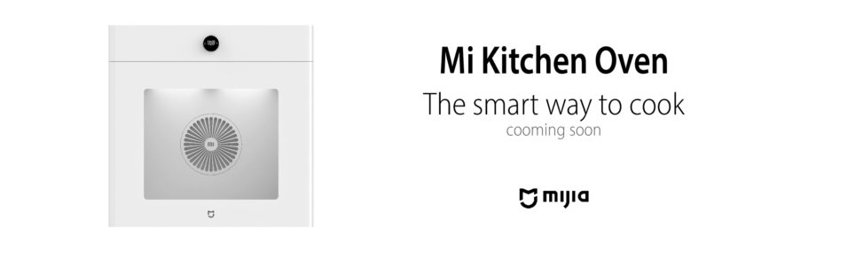
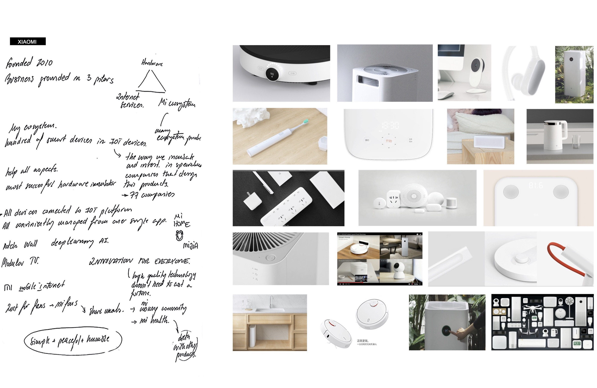
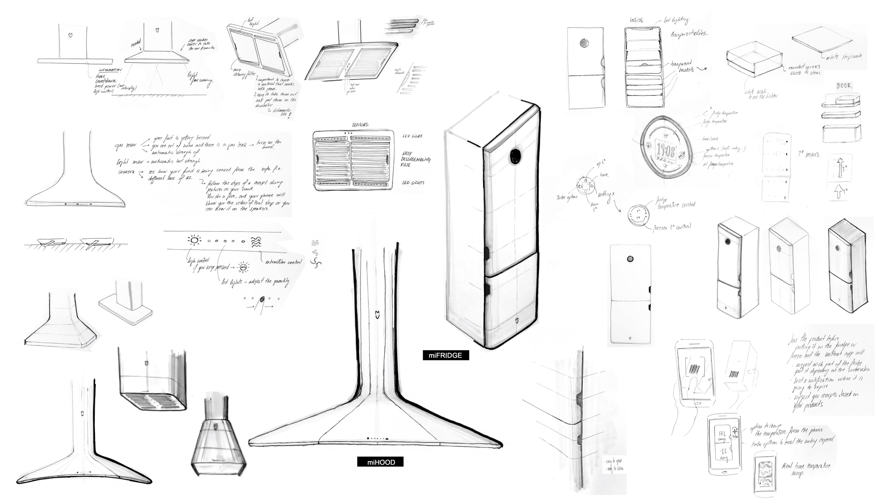
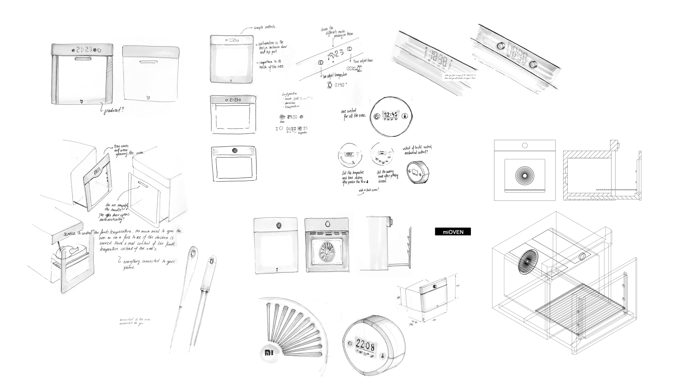
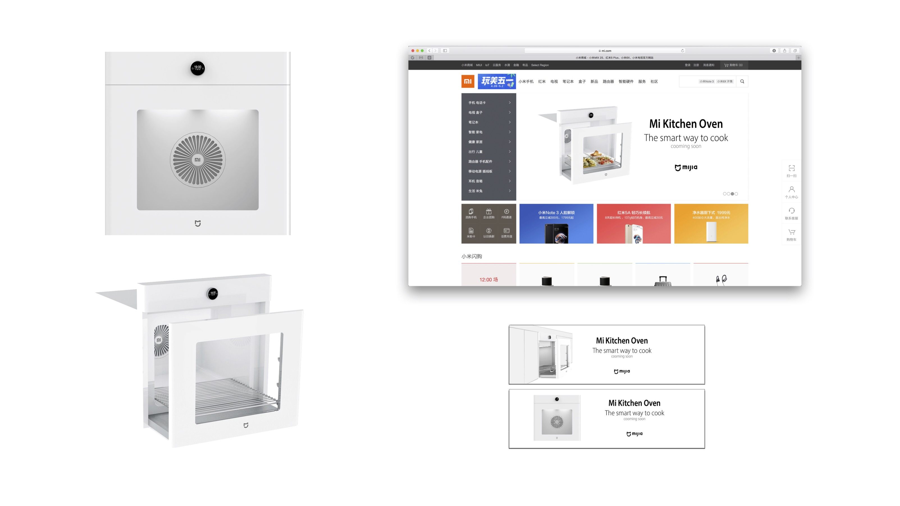

Mi Kitchen
WHEN? Spring 2018
WHO? Tomás Cabezón
WHY? Personal Project
WHERE? 上海 Shanghai

This project is the result of a 48h design exam I was asked to do for a design company. The briefing was the following:
By the philosophy where less is more, brands have a hard challenge to outstand by design. However, clever designers are able to abstract unique design features to build distinguishable design languages for a brand. Task:
Imagine Xiaomi decides to launch MiKitchen.
1. Identify the design elements that constitute Xiaomi Design Language.
2. Explore how these design elements could be applied to a Hood, Oven, Fridge. (Use sketches, highlight key points).
3. Visualize ONE of the products (use 3D model + photoshop)
4. Introduce the product in a website-looking banner. (render and post production).
2. Explore how these design elements could be applied to a Hood, Oven, Fridge. (Use sketches, highlight key points).
3. Visualize ONE of the products (use 3D model + photoshop)
4. Introduce the product in a website-looking banner. (render and post production).
Output: Four (4) slides that show your design thinking, approach, execution and skills.
   